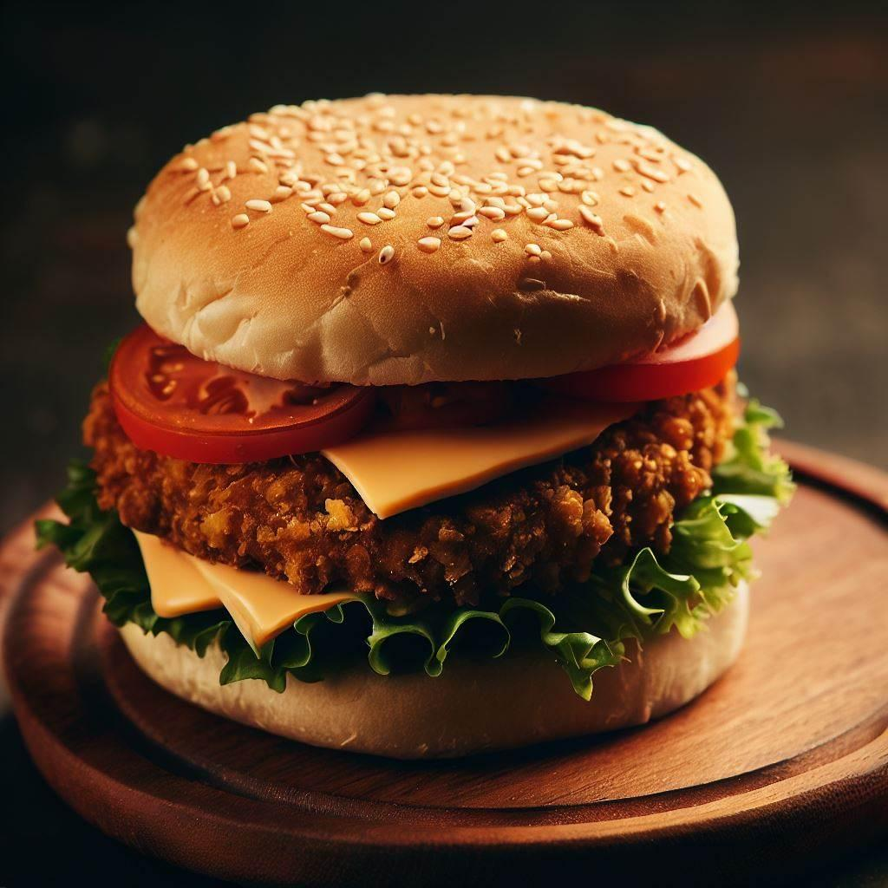

Portobello Mushroom Burger

Description
Portobello mushrooms make for a great veggie burger option for a vegetarian
barbecue or vegan cookout. Some recipes top pan-fried or grilled
portobello mushrooms with a cool avocado and yogurt sauce1.
For a vegan and non-dairy portobello mushroom burger, you can omit the yogurt sauce
or make it with non-dairy soy or coconut milk yogurt1. You can also include your
favorite condiments or additions such as lettuce, fresh spinach leaves, or sliced tomatoes.
Ingredients
- 4 portobello mushroom caps
- ¼ cup balsamic vinegar
- 2 tablespoons olive oil
- 1 tablespoon minced garlic
- 1 teaspoon dried basil
- 1 teaspoon dried oregano
- salt and pepper to taste
- 4 (1 ounce) slices provolone cheese
Steps
- Place mushroom caps, smooth side up, in a shallow dish.
- Whisk together balsamic, oil, garlic, basil, and oregano in a small bowl. Season with salt and pepper.
- Pour vinaigrette over mushrooms. Let stand at room temperature for 15 minutes or so, turning twice.
- Preheat grill for medium-high heat.
- Brush grill grates with oil. Place mushrooms on grill, reserving marinade for basting.
Grill until just tender, 5 to 8 minutes per side, brushing with marinade frequently.
- Top mushrooms with cheese and continue grilling until cheese is melted, about 2 minutes.
YUMMY !
Return to main page